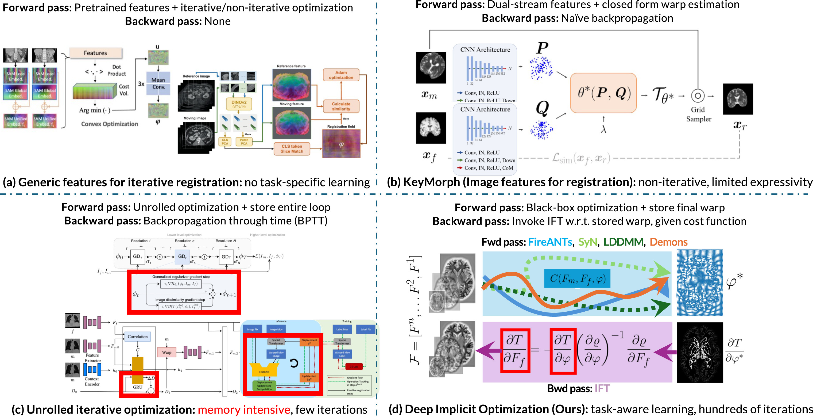

Deep Learning in Image Registration (DLIR) methods have been tremendously successful in image registration due to their speed and ability to incorporate weak label supervision at training time. However, existing DLIR methods forego many of the benefits and invariances of optimization methods. The lack of a task-specific inductive bias in DLIR methods leads to suboptimal performance, especially in the presence of domain shift.
Our method aims to bridge this gap between statistical learning and optimization by explicitly incorporating optimization as a layer in a deep network. A deep network is trained to predict multi-scale dense feature images that are registered using a black box iterative optimization solver. This optimal warp is then used to minimize image and label alignment errors. By implicitly differentiating end-to-end through an iterative optimization solver, we explicitly exploit invariances of the correspondence matching problem induced by the optimization, while learning registration and label-aware features, and guaranteeing the warp functions to be a local minima of the registration objective in the feature space.
Our framework shows excellent performance on in-domain datasets, and is agnostic to domain shift such as anisotropy and varying intensity profiles. For the first time, our method allows switching between arbitrary transformation representations (free-form to diffeomorphic) at test time with zero retraining. End-to-end feature learning also facilitates interpretability of features and arbitrary test-time regularization, which is not possible with existing DLIR methods.

Fig. 1. An illustrative comparison of existing methods and our method. (a) Generic features for image registration leverage the expressiveness and robustness of iterative optimization but do not incorporate task-specific learning, leading to suboptimal asymptotic performance on the in-distribution task. (b) Feature learning for closed-form parametric warp representations enable task-aware image features for registration, but are limited in expressiveness due to limited families of closed-form transforms and lack of error-correcting nature intrinsic to iterative optimization. (c) Unrolled iterative optimization using recurrent modules mimic the flavor of traditional optimization and enable task-aware image features. However, they are limited in expressivity because they can run only for a few number of iterations due to infeasible computational requirements. (d) DIO (our method) synergizes the expressivity of advanced iterative solvers and task-aware image feature learning by defining a custom backward pass that does not require unrolling or iteration. DIO provides the best of both worlds by inheriting the accuracy, expressivity, and robustness of iterative solvers, and asymptotic performance of learnable features.
Deep Learning for Image Registration (DLIR) methods have achieved remarkable speed improvements but often sacrifice the robustness and invariances of traditional optimization methods. Most existing DLIR architectures do not explicitly incorporate the invariances required for dense correspondence matching, necessitating vast amounts of data to learn these invariances. Since large datasets are scarce in medical imaging, existing DLIR methods exhibit brittle performance under domain shift.
@article{jena2025deep,
title={Deep implicit optimization enables robust learnable features for deformable image registration},
author={Jena, Rohit and Chaudhari, Pratik and Gee, James C},
journal={Medical Image Analysis},
pages={103577},
year={2025},
publisher={Elsevier}
}